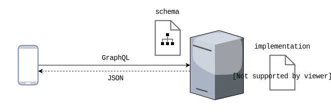

class: center, middle # GraphQL Servers in ReasonML/OCaml --- class: center, middle Andreas Garnæs<br/> `@andreas` (github)<br/> `@cuvius` (twitter)<br/> <img src="images/zendesk-wordmark.svg" width=100> --- class: center, middle  --- class: center, middle  --- class: center, middle  --- # Resources - [OCaml cheat sheet](http://www.ocamlpro.com/files/ocaml-lang.pdf) - [Standard library cheat sheet](http://www.ocamlpro.com/files/ocaml-stdlib.pdf) - [Reason Syntax cheat sheet](https://reasonml.github.io/docs/en/syntax-cheatsheet) - [`ocaml-graphql-server` documentation](https://andreas.github.io/ocaml-graphql-server/graphql-lwt/Graphql_lwt/Schema/index.html) - [`ocaml-graphql-server` examples](https://github.com/andreas/ocaml-graphql-server#examples) - [Sketch.sh (Online REPL)](https://sketch.sh/) --- # Task 1 1. Check out the workshop Git repo ``` git checkout http://github.com/andreas/reason-graphql-workshop ``` 1. Compile and run the server ``` dune exec src/server/server.exe ``` 1. Open `localhost:8080/graphql` in a browser --- class: two-column # Objects and Fields ```ocaml Schema.(obj "Address" ~fields:(fun _ -> [ (* fields go here *) ]) ) ``` -- ```ocaml field "street" ~typ:(non_null string) ~args:[] ~resolve:(fun () address -> address.Address.street ) ``` --- # Task 2 1. Add the following fields to the type `Address`: - `street_number` - `postal_code` - `city` - `floor` - `door` 2. Create a new GraphQL object `Location` with fields `lat` and `lng`. 3. Add a field `location` to `Address` of type `Location`. --- # Promises A value of type `'a Lwt.t` is a _promise_ for a value of type `'a`. For example `int Lwt.t` will resolve to an `int`. -- You can create a promise with `Lwt.return`: ```ocaml Lwt.return 1 (* int Lwt.t *) ``` -- You bind a callback to the promise using `>>=`: ```ocaml open Lwt.Infix let () = Lwt.return 1 >>= fun n -> Format.printf "Promise resolved to %d" n ``` --- # Result type Operations that can fail typically return a `result` value. ```ocaml type ('a, 'b) result = | Ok of 'a | Error of 'b ``` -- ```ocaml (* safe_div : int -> int -> (int, string) result *) let safe_div a b = if b = 0 then Error "Cannot divide by zero" else Ok (a / b) ``` -- Use `match` on the result to extract the value: ```ocaml match safe_div 8 2 with | Ok n -> Format.printf "Result is %d" n | Error err -> Format.printf "Error: %s" err ``` --- # Arguments ```ocaml field "echo" ~typ:(non_null string) ~args:Arg.[ arg "message" ~typ:(non_null string) ] ~resolve:(fun () () msg -> Format.sprintf "You said: %s" msg ) ``` --- # IO fields ```ocaml io_field "sleep" ~typ:(non_null string) ~args:Arg.[ arg "duration" ~typ:(non_null float); ] ~resolve:(fun () () duration -> Lwt_unix.sleep duration >>= fun () -> let msg = Format.sprintf "I slept for %f seconds" duration in Lwt.return (Ok msg) ) ``` --- # `Dawa` ```ocaml module Dawa : sig val search : string -> (Address.t list, string) result Lwt.t end = struct (* ... *) end ``` -- Add `dawa` to the list of libraries in `src/server/dune`: ```diff - (libraries graphql graphql-lwt geotypes) + (libraries graphql graphql-lwt geotypes dawa) ``` -- Enable SSL connections (as a client): ``` opam install lwt_ssl (* OR *) opam install tls ``` --- # Task 3 Add a field `searchAddress(query : String!)` to the root object, which calls `Dawa.search` to return a list of addresses. --- # `Filarkiv` ```ocaml module Filarkiv : sig val search : tenant_id:int -> id:string -> (Document.t list, string) result Lwt.t end = struct (* ... *) end ``` -- Add `filarkiv` to the list of libraries in `src/server/dune`: ```diff - (libraries graphql graphql-lwt geotypes dawa) + (libraries graphql graphql-lwt geotypes dawa filarkiv) ``` --- # Task 4 1. Create a new GraphQL object type to represent documents from Filarkiv. 2. Add a new field `documents` to `Address`, which calls `Filarkiv.search`. 3. Enjoy as GraphQL is making a ton of queries on your behalf! --- class: middle, center # Thanks!